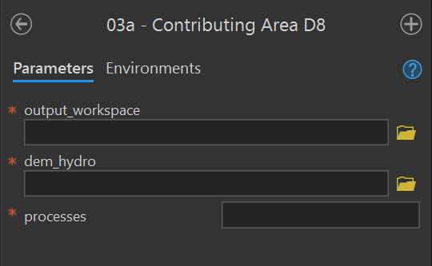
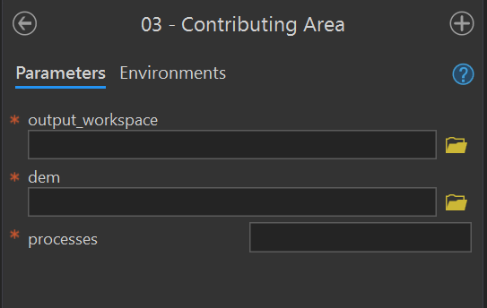
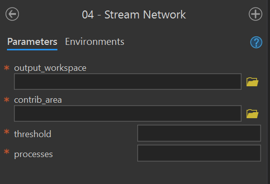
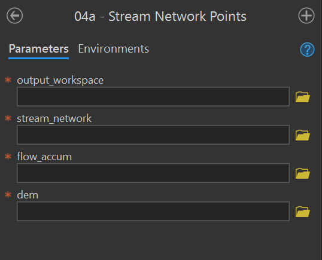
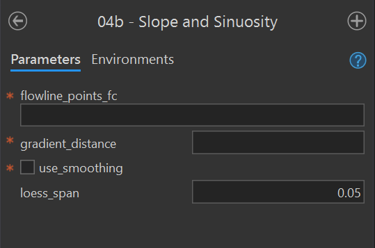
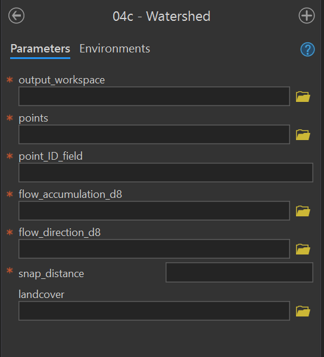
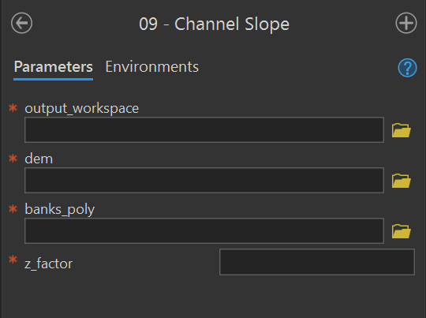
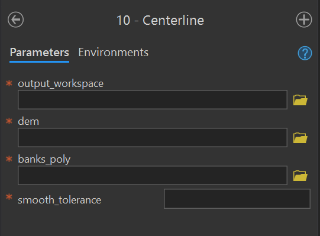
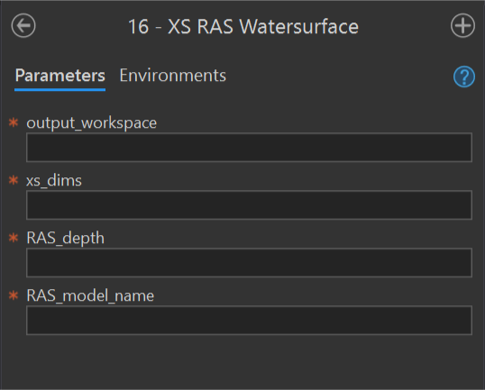

| Parameter | Type | Description | Required |
|---|---|---|---|
| output_workspace | Workspace | Path to the output workspace. | required |
| dem | Raster Dataset | Path to the digital elevation model (DEM). | required |
| processes | long | The number of stripes that the DEM will be divided into and the number of MPI parallel processes that will be spawned to evaluate each of the stripes. It is recommended to use no more than the number of cores on your computer. | required |
17 Validation
This page is under construction and being revised on a continued basis. Please check back later for updates.
03a - Contributing Area D8
Purpose - This tool creates the D8 flow_accumulation_d8 and flow_direction_d8 rasters in the output workspace for a given input DEM using these instructions in the user manual.
Code - This ArcGIS script tool calls the Python script FluvialGeomorph-toolbox/tools/_03a_ContributingAreaD8.py.
Parameters - This tool contains the following parameters:

03 - Contributing Area
Purpose - This tool calculates the D-infinity contributing area for each pixel in the input DEM and creates a contributing_area raster in the output workspace using these instructions in the user manual.
Code - This ArcGIS script tool calls the Python script FluvialGeomorph-toolbox/tools/_03_ContributingArea.py. This Python script uses the TauDEM D-Infinity Contributing Area tool to calculate the specific catchment area (which is the contributing area per unit contour length using the multiple flow direction D-infinity approach).
Parameters - This tool contains the following parameters:
| Parameter | Type | Description | Required |
|---|---|---|---|
| output_workspace | Workspace | Path to the output workspace. | required |
| dem | Raster Dataset | Path to the digital elevation model (DEM). | required |
| processes | long | The number of stripes that the DEM will be divided into and the number of MPI parallel processes that will be spawned to evaluate each of the stripes. It is recommended to use no more than the number of cores on your computer. | required |

04 - Stream Network
Purpose - This tool creates the synthetic flow network stream_network polyline feature class from a contributing_area raster for a given stream initiation threshold using these instruction in the user manual.
Code - The ArcGIS script tool calls the Python script FluvialGeomorph-toolbox/tools/_04_StreamNetwork.py.
Parameters - This tool contains the following parameters:
| Parameter | Type | Description | Required |
|---|---|---|---|
| output_workspace | Workspace | Path to the output workspace. | required |
| contrib_area | Raster Dataset | Path to the D-Infinity contributing area raster created by the Contributing Area tool. | required |
| threshold | long | Flow accumulation threshold to initiate a stream expressed in the units of the source DEM used to accumulate the flow. | required |
| processes | long | The number of stripes that the DEM will be divided into and the number of MPI parallel processes that will be spawned to evaluate each of the stripes. It is recommended to use no more than the number of cores on your computer. | required |

04a - Stream Network Points
Purpose - This tool converts the stream_network to the stream_network_points points feature class using the these instructions from the user manual. This tool extracts elevation information from the DEM and calculates the drainage area.
Code - This ArcGIS script tool calls the Python script FluvialGeomorph-toolbox/tools/_04a_StreamNetworkPoints.py.
Parameters - This tool contains the following parameters:
| Parameter | Type | Description | Required |
|---|---|---|---|
| output_workspace | Workspace | Path to the output workspace. | required |
| stream_network | Feature Class | Path to the edited stream_network feature class. |
required |
| flow_accum | Raster Dataset | Path to the flow accumulation model. | required |
| dem | Raster Dataset | Path to the digital elevation model (DEM). | required |

04b - Slope and Sinuosity
Purpose - This tool calculates the gradient_* points feature class for a flowline_points or stream_network feature class using these instructions from the user manual.
Code - This ArcGIS script tool calls the R script FluvialGeomorph-toolbox/tools/_04b_Gradient.R. This Python script call the R function fluvgeo::slope_sinuosity.
Parameters - This tool contains the following parameters:
| Parameter | Type | Description | Required |
|---|---|---|---|
| flowline_points_fc | Feature Class | The full path to a flowline_points feature class. |
required |
| gradient_distance | double | The number of features to lead (upstream) and lag (downstream) to calculate the slope and sinuosity. Must be an integer. | required |
| use_smoothing | Boolean | Determines if smoothed elevation values are used to calculate gradient and sinuosity (default is FALSE). | required |
| loess_span | double | The loess regression span parameter (defaults to 0.05). | required |

04c - Watershed
Purpose - This tool creates the watershed polygon feature class in the output workspace using these instructions from the user manual. This tool calculates the extent of the upstream drainage area for each point feature in the input watershed_points point feature class. This tool optionally calculates the landcover proportion in each watershed feature.
Code - This ArcGIS script tool calls the Python script FluvialGeomorph-toolbox/tools/_04c_Watersheds.py.
Parameters - This tool contains the following parameters:
| Parameter | Type | Description | Required |
|---|---|---|---|
| output_workspace | Workspace | Path to the output workspace. | required |
| points | Feature Class | Path to the watershed_points feature class. |
required |
| point_ID_field | Field | Field in the watershed_points feature class that contains the point IDs. |
required |
| flow_accumulation_d8 | Raster Dataset | Path to the flow accumulation model. | required |
| flow_direction_d8 | Raster Dataset | Path to the flow_direction_d8 model (must use D8 method). |
required |
| snap_distance | double | The distance the point will be snapped to find the cell of highest flow accumulation. | required |
| landcover | Raster Dataset | Path to a categorical land cover raster. | optional |

09 - Channel Slope
Purpose - This tool creates the channel_slope raster using these instructions in the user manual. This tool uses banks extent polygon to calculate a slope raster for the channel area.
Code - This ArcGIS script tool calls the Python script FluvialGeomorph-toolbox/tools/_09_ChannelSlope.py.
Parameters - This tool contains the following parameters:
| Parameter | Type | Description | Required |
|---|---|---|---|
| output_workspace | Workspace | Path to the output workspace. | required |
| dem | Raster Dataset | Path to the digital elevation model (DEM). | required |
| banks_poly | Feature Class | Path to a banks polygon feature class representing the channel area for which slope will be calculated. | required |
| z_factor | double | Number of ground x,y units in one surface z unit. | required |

10 - Centerline
Purpose - This tool creates the centerline polyline feature class using these instructions for Level 1 and Level 2 from the user manual. The centerline is the strem flow path that lies midway between the banks at bankfull.
Code - This ArcGIS script tool calls the Python script FluvialGeomorph-toolbox/tools/_10_Centerline.py.
Parameters - This tool contains the following parameters:
| Parameter | Type | Description | Required |
|---|---|---|---|
| output_workspace | Workspace | Path to the output workspace. | required |
| dem | Raster Dataset | Path to the digital elevation model (DEM). | required |
| banks_poly | Feature Class | Path to a banks polygon representing the channel area for which slope will be calculated. | required |
| smooth_tolerance | long | The PAEK smoothing tolerance that controls the calculating of new vertices. Acceptable smoothing occurs with values between 2 - 5. | required |

16 - XS RAS Watersurface
Purpose - This tool adds or updates the field ras_wse_* to a cross section dimensions feature class using these instructions for Level 2 and Level 3 from the user manual.
Code - This ArcGIS script tool calls the Python script FluvialGeomorph-toolbox/tools/_16_XS_RAS_WaterSurface.py.
Parameters - This tool contains the following parameters:
| Parameter | Type | Description | Required |
|---|---|---|---|
| output_workspace | Workspace | Path to the output workspace. | required |
| xs_dimensions | Feature Class | Path to a cross section dimension line feature class. | required |
| RAS_depth | string | Path to the RAS model depth raster (elevation units feet). | required |
| RAS_model_name | string | Name of the RAS model that the depth raster represents. This name will be used to name the calculated WSE fields. | required |

Calculate Contributing Area (Level 2)
Calculate the contributing drainage area for each pixel in the DEM.
- Use the
🛠️Contributing Area D8tool to calculate the contributing area for the study area watershed. This tool creates the🗺️contributing_arearaster. Rename this DEM🗺️watershed_contributing_area. - Use the
🛠️Contributing Area D8tool to calculate the contributing area for the high resolution DEM. If created, use the🗺️dem_hydroraster as input.
- The
📊processesparameter of the🛠️ Contributing Area D8tool can be safely set to approximately 2 less than the number of cores on the computer running the tool.
Calculate Slope and Sinuosity (Level 2)
Examine the stream network slope and sinuosity to help make decisions about how best to define study reaches.
- Use the
🛠️Stream Network Pointstool to convert the🗺️stream_networkfeature class into the🗺️stream_networks_pointsfeature class.
Determine the moving window size
Slope and sinuosity are scale dependent metrics. This means that these metrics are affected by the size of the upstream moving window used in their calculation. To determine the appropriate size of this moving window for this study area, use the following steps:
- It is recommended that slope and sinuosity be calculated using a moving window size equal to two meander wavelengths.
- Estimate a rough initial bankfull width for the reach. Use the DEM to examine several representative locations throughout the study area.
- Estimate the length of two meander wavelengths by multiplying the rough bankfull width by
🧮10(e.g., 30ft bankfull width * 10 = 300ft, two meander wavelengths).
- Determine how many
🗺️stream_networks_pointstwo meander wavelengths represent. For example, if🗺️stream_networks_pointsare spaced 1m apart on average, then two meander wavelengths would be 91 points (i.e., 300ft / 3.28084ft per m).
Calculate Slope and Sinuosity
- Use the
🛠️Slope and Sinuositytool to calculate the slope and sinuosity of the🗺️stream_networks_pointsfeature class. - Set the
📊gradient_distanceparameter to the number of upstream🗺️stream_networks_pointsthat you calculated in a previous step. - If the elevations in the channel seem noisy, check the
📊use_smoothingparameter and set the📊loess_spanparameter to a value between🧮0-1.
Confirm the degree of smoothing
- Use a chart to verify the choice of the smoothing
loess_spanparameter. - Right-click on the
🗺️gradient_*feature class in the map Table of Contents and select “Create Chart”, and select “Line”. In theDate or Numberdropdown, choose the fieldPOINT_M. In the📊Aggregationdropdown, choose🧮None. In the📊Numeric field(s)checklist, check the boxes next to📊Zand📊Z_smooth. Click the “Apply” button to view the chart. - Visually assess the degree of smoothing. The smoothing should be high enough to eliminate LiDAR elevation noise, but not so high as to eliminate meaningful channel elevation change.
- If the smoothing is not ideal, re-run the tool and adjust the
📊loess_spanparameter.
Delineate Watersheds
Delineate the areal extent of watersheds for each reach in the study area.
- In the
🗺️stream_network_pointsfeature class, select points that represent the downstream location of each of the sites in the project study area. - Export these point features to a new feature class named
🗺️watershed_pointsin the study area geodatabase. - Use the
🛠️Watershedtool to create a watershed polygon for each feature in the🗺️watershed_pointsfeature class.
Create the site geodatabase
The purpose of this step is to create a new site geodatabase and populate it with initial data.
In the
🗃️study area folder, begin by creating a new site folder named for the site.
In the new site folder, create a new “Data” folder.
In the new site data folder, create a new site geodatabase for each LiDAR survey. In the example above, the Papillion Creek project study area will be subdivided into a specific site called Cole Creek. Since there are multiple LiDAR surveys for this study area (e.g., 2016, 2010, 2006), three site geodatabases will need to be created.
- Cole_Creek_2016.gdb
- Cole_Creek_2010.gdb
- Cole_Creek_2006.gdb
- Cole_Creek_2016.gdb
Back in the study area geodatabase, select the features in the
🗺️stream_networkfeature class representing the current site. Use the🛠️Data | Export Featuresfunction to export the selected site features to the new site geodatabase. Name the exported feature class🗺️stream_networkExamine the
🗺️dem_hydroraster and determine the maximum width of the active floodplain along the entire site. Be conservative with this estimate. Given its later use, it is important to generously overestimate this value.Use this maximum floodplain width estimate to buffer the reach
🗺️stream_networkfeature class and name it🗺️stream_network_buffer.Use the ESRI
🛠️Clip Rastertool to clip the study area geodatabase🗺️dem_hydroto the extent of the reach using the🗺️stream_network_bufferfeature class. Save the clipped raster to the reach geodatabase and name it🗺️dem_hydro_<buffer distance>(e.g., dem_hydro_1000 for a buffer distance of 1000 meters).Use the ESRI
🛠️Clip Rastertool to clip the study area geodatabase🗺️contributing_areato the extent of the reach using the🗺️stream_network_bufferfeature class. Save the clipped raster to the reach geodatabase and name it🗺️contributing_area_<buffer distance>(e.g., contributing_area_1000 for a buffer distance of 1000 meters).
If you discover in later steps that the buffer distance was underestimated, you will need to repeat this step with a wider buffer.